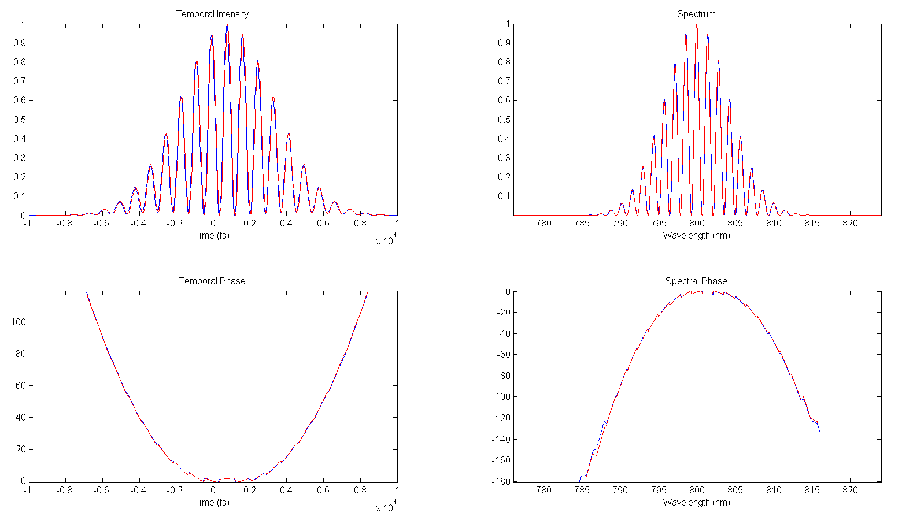

With MUD Tadpole, we are essentially taking a series of SEA Tadpole traces at set intervals. The input to our system is actually a train of (allegedly) identical pulses, and there are about 1 million actual superpositions happening every second. What we do is delay the reference pulse with respect to the unknown pulse and take multiple cross sections. That way we can overlap our small reference pulse over every part of the unknown pulse. Each of these traces contains information about one piece of the pulse. (continues below)

By taking many traces, we can fully reconstruct the original unknown pulse. These individual traces are concatenated, and some fancy math goes into making sure that the slices are merged smoothly (look in temporal_interleaving.m).

This pulse was able to be imaged with only 3 traces, superimposed here. This plot can be created by enabling the plot loop near line 40 in the best_concat_mud.m file.
The program outputs all of the information about the pulse in both the spectral and temporal domains. In the plot below, the blue line is a simulated pulse, and the red line is the MUD Tadpole's retrieved pulse. They show excellent agreement except for a time delay of exactly one timestep, a trivial bug (the reference frame is arbitrary) that may be addressed in the future if desired.

Created with the Personal Edition of HelpNDoc: Easily create HTML Help documents